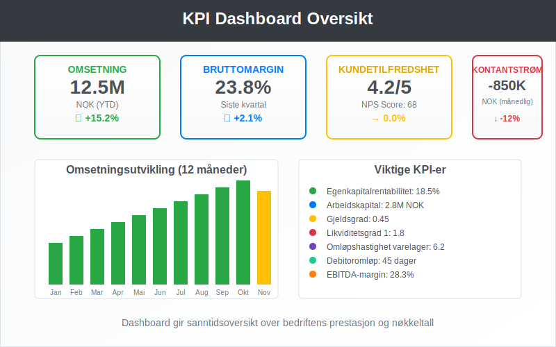
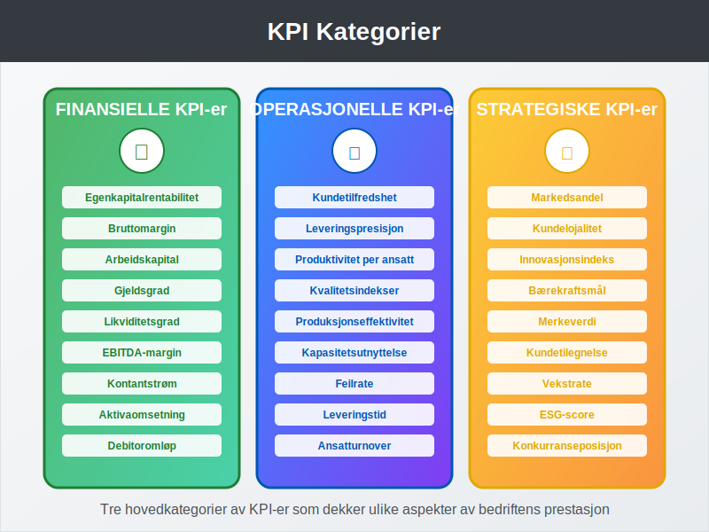
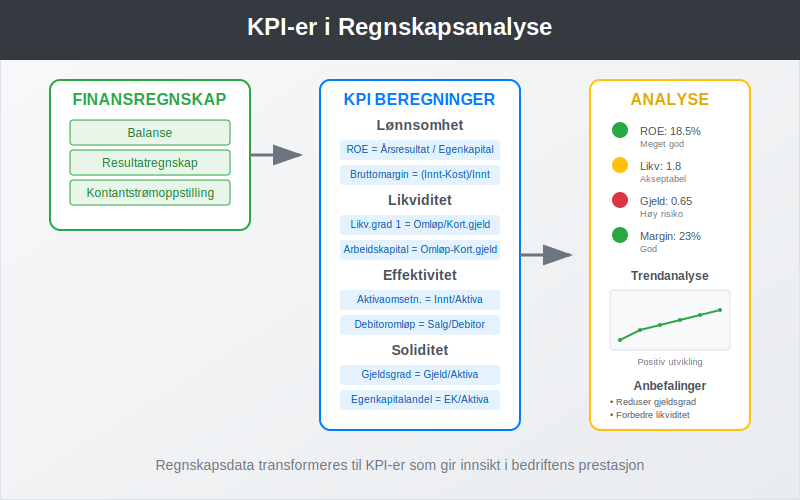
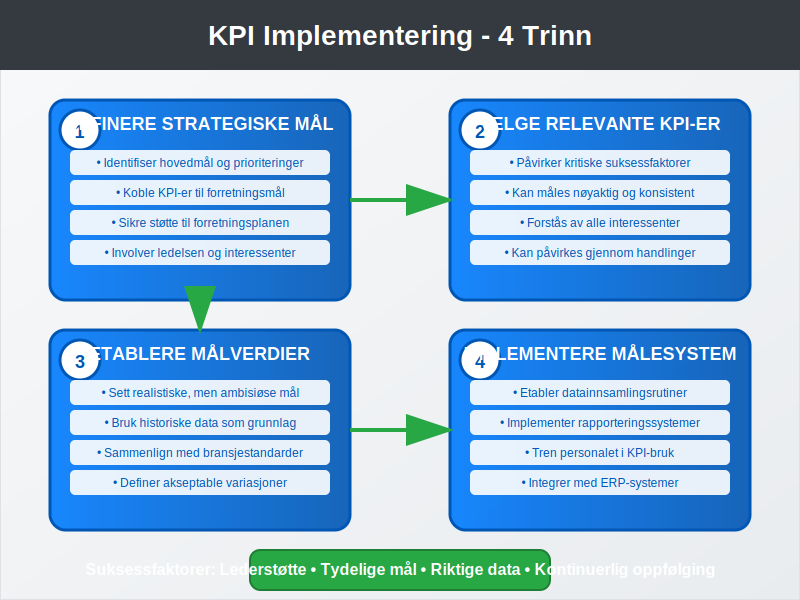
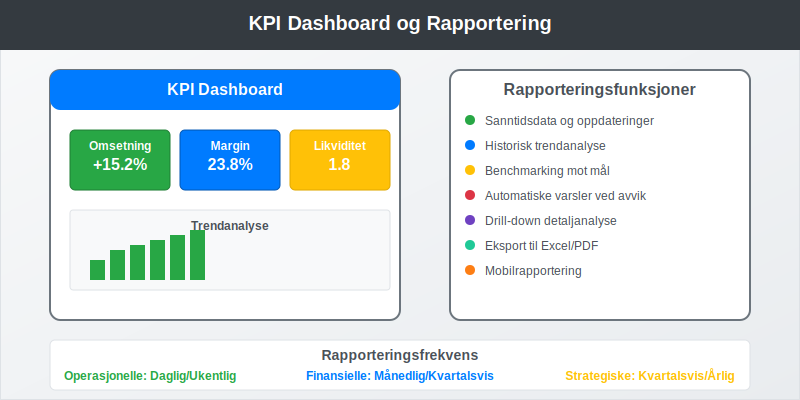
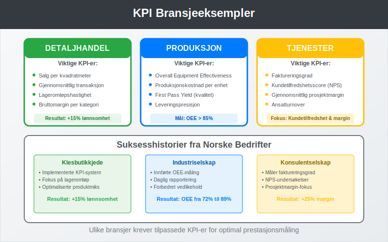
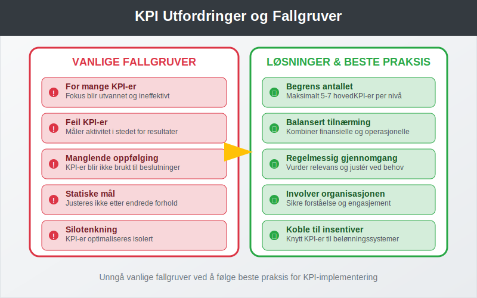
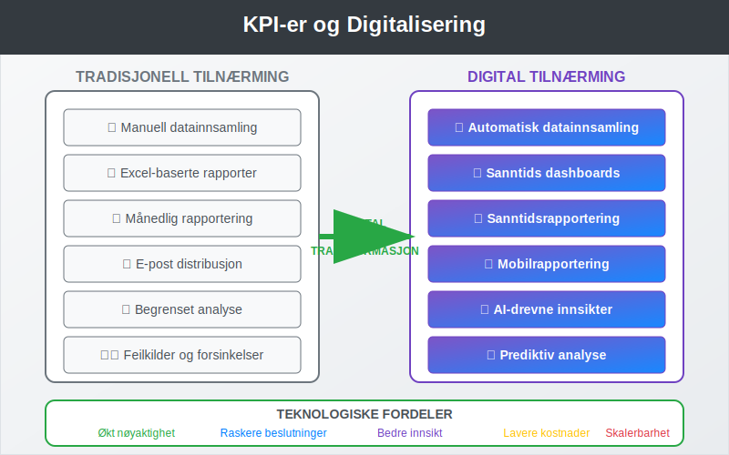
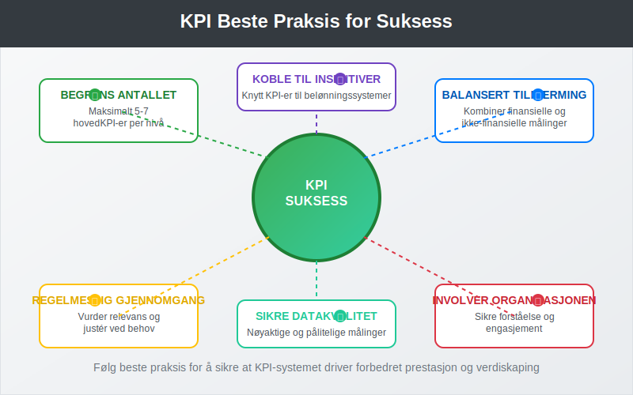

KPI (Key Performance Indicators) er målbare verdier som viser hvor effektivt en bedrift oppnår sine viktigste forretningsmål. I regnskap og finansiell analyse brukes KPI-er for å evaluere bedriftens prestasjon, identifisere forbedringsområder og støtte strategiske beslutninger.
Hva er KPI?
Key Performance Indicators er kvantifiserbare målinger som brukes til å evaluere suksessen til en organisasjon eller aktivitet. KPI-er fungerer som et dashboard for ledelsen og gir innsikt i bedriftens helse og retning.

Kjennetegn ved Gode KPI-er:
- Målbare: Kan kvantifiseres med tall og data
- Relevante: Direkte knyttet til forretningsmål
- Tidsbaserte: Har klare tidsrammer for måling
- Handlingsrettede: Kan påvirkes gjennom konkrete tiltak
- Sammenlignbare: Kan benchmarkes mot bransje eller historiske data
Typer KPI-er i Regnskap og Finans
KPI-er kan kategoriseres på flere måter avhengig av deres formål og anvendelsesområde.

Finansielle KPI-er
Disse måler bedriftens økonomiske prestasjon og er ofte basert på data fra finansregnskap.
| KPI | Formel | Formål |
|---|---|---|
| Egenkapitalrentabilitet | Årsresultat / Gjennomsnittlig egenkapital | Måler avkastning på eiernes investering |
| Bruttomargin | (Driftsinntekter - Driftskostnader) / Driftsinntekter | Viser lønnsomhet før faste kostnader |
| Arbeidskapital | Omløpsmidler - Kortsiktig gjeld | Måler kortsiktig likviditet |
| Gjeldsgrad | Total gjeld / Total aktiva | Viser finansiell risiko |
Operasjonelle KPI-er
Disse fokuserer på driftseffektivitet og prosessoptimalisering.
- Kundetilfredshet: Målt gjennom undersøkelser og tilbakemeldinger
- Leveringspresisjon: Andel leveranser i tide
- Produktivitet per ansatt: Omsetning eller produksjon per ansatt
- Kvalitetsindekser: Feilrate, reklamasjoner, returandel
Strategiske KPI-er
Disse måler fremgang mot langsiktige mål og strategier.
- Markedsandel: Bedriftens andel av totalmarkedet
- Kundelojalitet: Gjenkjøpsrate og kundelivstidsverdi
- Innovasjonsindeks: Andel inntekter fra nye produkter
- Bærekraftsmål: ESG-relaterte målinger
KPI-er i Regnskapsanalyse
Regnskapsdata danner grunnlaget for mange av de viktigste KPI-ene som brukes i bedriftsstyring.

Lønnsomhets-KPI-er
Driftsresultat er en sentral KPI som viser bedriftens evne til å generere overskudd fra kjernevirksomheten.
Beregning av viktige lønnsomhets-KPI-er:
EBITDA = Driftsresultat + Avskrivninger + Amortisering
EBITDA-margin = EBITDA / Driftsinntekter × 100%
Netto fortjenestemargin = Årsresultat / Driftsinntekter × 100%
Likviditets-KPI-er
Disse måler bedriftens evne til å møte kortsiktige forpliktelser.
| KPI | Beregning | Tolkning |
|---|---|---|
| Likviditetsgrad 1 | Omløpsmidler / Kortsiktig gjeld | > 2,0 = God likviditet |
| Likviditetsgrad 2 | (Omløpsmidler - Varelager) / Kortsiktig gjeld | > 1,0 = Akseptabel |
| Kontantstrøm | Kontantstrøm fra drift | Positiv = Sunn drift |
Effektivitets-KPI-er
Disse måler hvor effektivt bedriften bruker sine ressurser.
- Omløpshastighet varelager: Varekostnad / Gjennomsnittlig varelager
- Debitoromløp: Kreditsalg / Gjennomsnittlige kundefordringer
- Aktivaomsetning: Driftsinntekter / Gjennomsnittlige totale aktiva
Implementering av KPI-system
En systematisk tilnærming til KPI-implementering sikrer at målsystemet støtter bedriftens strategiske mål.

Trinn 1: Definere Strategiske Mål
- Identifiser bedriftens hovedmål og prioriteringer
- Koble KPI-er til spesifikke forretningsmål
- Sikre at KPI-ene støtter forretningsplanen
Trinn 2: Velge Relevante KPI-er
Kriterier for KPI-valg:
- Påvirker kritiske suksessfaktorer
- Kan måles nøyaktig og konsistent
- Forstås av alle relevante interessenter
- Kan påvirkes gjennom konkrete handlinger
Trinn 3: Etablere Målverdier
- Sett realistiske, men ambisiøse mål
- Bruk historiske data som utgangspunkt
- Sammenlign med bransjestandarder
- Definer akseptable variasjonsområder
Trinn 4: Implementere Målesystem
- Etabler datainnsamlingsrutiner
- Implementer rapporteringssystemer
- Tren personalet i KPI-bruk
- Integrer med eksisterende ERP-system
KPI Dashboard og Rapportering
Effektiv visualisering og rapportering av KPI-er er avgjørende for deres nytteverdi.

Elementer i et Godt KPI Dashboard:
- Sanntidsdata: Oppdaterte målinger
- Trendanalyse: Historisk utvikling
- Benchmarking: Sammenligning med mål og konkurrenter
- Varslingssystem: Automatiske advarsler ved avvik
- Drill-down funksjonalitet: Mulighet for detaljert analyse
Rapporteringsfrekvens:
| KPI-type | Rapporteringsfrekvens | Eksempler |
|---|---|---|
| Operasjonelle | Daglig/Ukentlig | Salg, produksjon, kvalitet |
| Finansielle | Månedlig/Kvartalsvis | Lønnsomhet, likviditet, gjeld |
| Strategiske | Kvartalsvis/Årlig | Markedsandel, kundelojalitet |
Praktiske Eksempler fra Norske Bedrifter
La oss se på hvordan ulike bransjer bruker KPI-er i praksis.

Eksempel 1: Detaljhandel
Situasjon: En norsk klesbutikkjede ønsker å forbedre lønnsomheten.
Viktige KPI-er:
- Salg per kvadratmeter
- Gjennomsnittlig transaksjonsstørrelse
- Lageromløpshastighet
- Bruttomargin per produktkategori
Resultat: 15% økning i lønnsomhet gjennom optimalisering av produktmiks og lagerrotasjon.
Eksempel 2: Produksjonsbedrift
Situasjon: Et industriselskap fokuserer på operasjonell effektivitet.
Viktige KPI-er:
- Overall Equipment Effectiveness (OEE)
- Produksjonskostnad per enhet
- Kvalitetsrate (First Pass Yield)
- Leveringspresisjon
Implementering:
OEE = Tilgjengelighet × Ytelse × Kvalitet
Målsetting: OEE > 85%
Målefrekvens: Daglig rapportering
Eksempel 3: Tjenestebedrift
Situasjon: Et konsulentselskap ønsker å måle kundetilfredshet og lønnsomhet.
Viktige KPI-er:
- Faktureringsgrad (billable hours ratio)
- Kundetilfredshetsscore (NPS)
- Gjennomsnittlig prosjektmargin
- Ansatturnover
Utfordringer og Fallgruver
Implementering av KPI-systemer kan møte flere utfordringer som må håndteres proaktivt.

Vanlige Fallgruver:
- For mange KPI-er: Fokus blir utvannet
- Feil KPI-er: Måler aktivitet i stedet for resultater
- Manglende oppfølging: KPI-er blir ikke brukt til beslutninger
- Statiske mål: Justeres ikke etter endrede forhold
- Silotenkning: KPI-er optimaliseres isolert
Beste Praksis:
- Begrens antallet: Maksimalt 5-7 hovedKPI-er per nivå
- Balansert tilnærming: Kombiner finansielle og ikke-finansielle målinger
- Regelmessig gjennomgang: Vurder relevans og justér ved behov
- Involver organisasjonen: Sikre forståelse og engasjement
- Koble til insentiver: Knytt KPI-er til belønningssystemer
KPI-er og Digitalisering
Moderne teknologi har revolusjonert hvordan KPI-er samles inn, analyseres og rapporteres.

Teknologiske Muligheter:
- Automatisk datainnsamling: Integrasjon med forretningssystemer
- Sanntidsrapportering: Umiddelbar tilgang til oppdaterte data
- Prediktiv analyse: Bruk av AI for å forutsi trender
- Mobilrapportering: Tilgang til KPI-er på mobile enheter
- Selvbetjening: Brukere kan lage egne rapporter
Integrasjon med Regnskapssystemer:
Moderne regnskapssystemer kan automatisk generere mange finansielle KPI-er:
- Automatisk beregning av nøkkeltall
- Integrasjon med bankavstemming
- Kobling til bilagshåndtering
- Sanntids kontantstrømanalyse
Fremtiden for KPI-er
KPI-landskapet utvikler seg kontinuerlig med nye teknologier og forretningsmodeller.
Emerging Trends:
- ESG-KPI-er: Økt fokus på bærekraft og samfunnsansvar
- Sanntids-KPI-er: Umiddelbar måling og respons
- AI-drevne innsikter: Maskinlæring for mønstergjenkjenning
- Prediktive KPI-er: Fremtidsrettede målinger
- Stakeholder-KPI-er: Bredere perspektiv på verdiskaping
Regulatoriske Utviklinger:
Med innføringen av CSRD og økt fokus på EU-taksonomien, blir bærekrafts-KPI-er stadig viktigere for norske bedrifter.
Konklusjon
KPI-er er uunnværlige verktøy for moderne bedriftsledelse og regnskapsanalyse. De gir objektive målinger av prestasjon, støtter strategiske beslutninger og muliggjør kontinuerlig forbedring.
Nøkkelpunkter for Suksess:
- Velg KPI-er som støtter strategiske mål
- Balanser finansielle og operasjonelle målinger
- Implementer robuste måle- og rapporteringssystemer
- Involver organisasjonen i KPI-prosessen
- Gjennomgå og justér KPI-er regelmessig
Ved å følge beste praksis og unngå vanlige fallgruver, kan norske bedrifter bruke KPI-er til å drive forbedret prestasjon og langsiktig verdiskaping.

Effektiv bruk av KPI-er krever en helhetlig tilnærming som kombinerer strategisk tenkning, teknologisk støtte og organisatorisk engasjement. Med riktig implementering blir KPI-er en kraftig motor for bedriftens vekst og suksess.